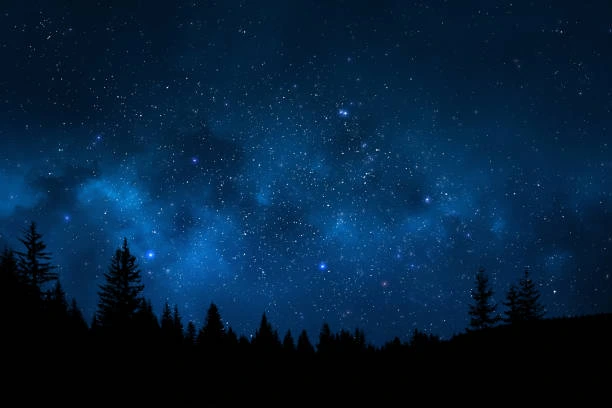
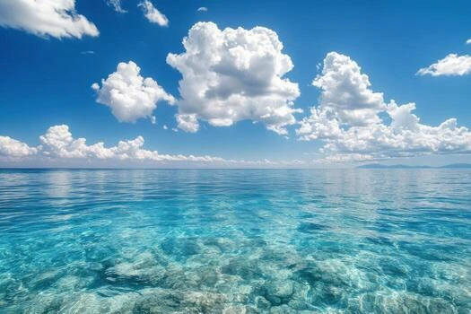
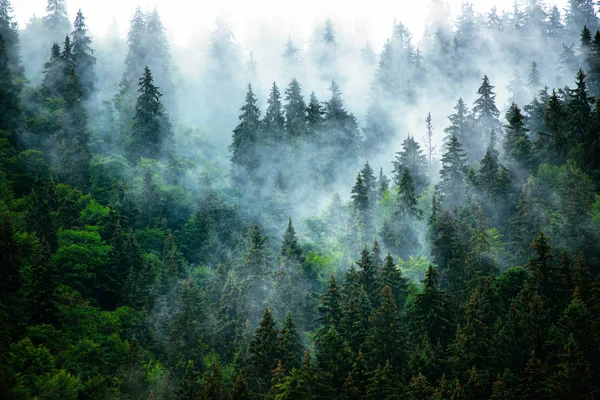
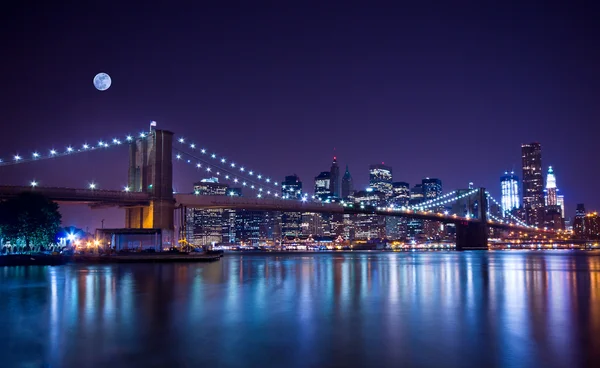

Галерея
Світ очима мандрівника

У цій галереї зібрано найулюбленіші кадри з моїх поїздок. Кожне зображення пов'язане з окремою історією: ранок у горах, вечір на березі моря, прогулянка нічним містом чи вогнище в лісі.
Фотографія допомагає зберегти атмосферу місця краще за будь-який опис. Тому я завжди беру з собою камеру і намагаюся фіксувати не лише відомі пам'ятки, а й прості моменти: вуличних музикантів, ринкові прилавки, світло на стінах будинків.
Історію кожної поїздки можна прочитати на сторінці Про мене.

Теми світлин
Усі кадри умовно поділено на такі групи:
- Гірські пейзажі та вершини.
- Узбережжя, заходи й сходи сонця.
- Нічні міста та вуличні вогні.
- Ліси, пустелі та зоряне небо.


Каталог зображень

Перелік світлин із коротким описом:
| Назва | Тема | Час доби |
|---|---|---|
| Гори | Пейзаж | Вечір |
| Море | Узбережжя | Захід сонця |
| Місто | Архітектура | Ніч |
| Ліс | Природа | День |
| Пустеля | Пейзаж | День |
| Табір | Походи | Ніч |

Питання про світлини
Для більшості кадрів достатньо звичайної камери або смартфона. Головне - світло, тому найкращі знімки виходять вранці та ввечері.
У «золоту годину» одразу після сходу сонця та перед заходом, коли світло м'яке і тепле.
Ці світлини наведено як навчальний приклад. Перед використанням у своїх проєктах уточніть умови.